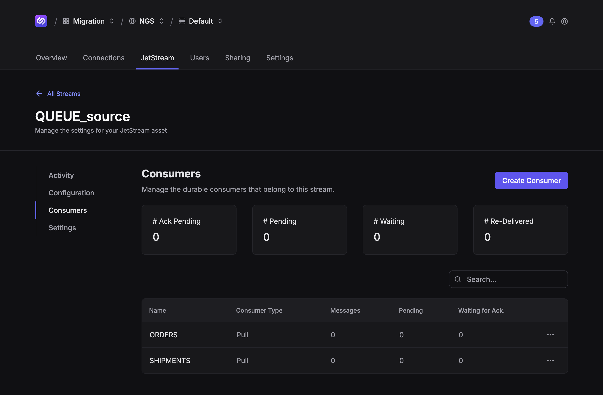
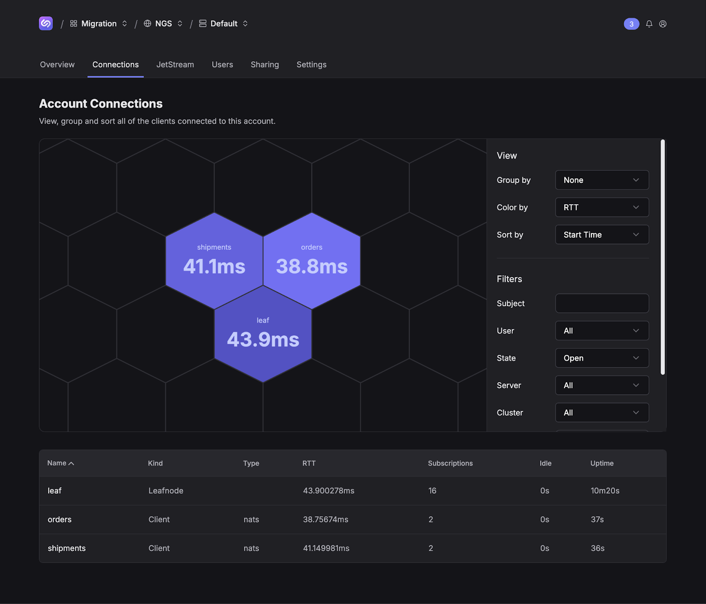

Cloud
Connect the leaf node to the Synadia Cloud system
First things first, we need to download NATS user credentials to connect the leaf node to Synadia Cloud.
Navigate to the NATS User (Team > System > Account > NATS User) you want to use to connect the local system to Synadia Cloud. Click Get Connected and download the credentials file. Save it to ./tf/cloud/cloud.creds.
Uncomment the second leafnodes.remotes block in leaf.conf and restart the leaf node server.
{
url: "nats://localhost:7422"
credentials: ".nsc/creds/local/A/admin.creds"
},
- # {
- # url: "tls://connect.ngs.global"
- # credentials: "./tf/cloud/cloud.creds"
- # account: A...
- # }
+ {
+ url: "tls://connect.ngs.global"
+ credentials: "./tf/cloud/cloud.creds"
+ account: "ABIV654V3C2AS4Y6NMZDPHVVOERHABHMBXNS2PFVSQQSGW6QIOQWR6FR"
+ }
Restart the NATS server (the reload signal is not supported when editing leafnodes.remotes, e.g. nats-server –signal reload).
Verify the leaf node shows up in the Synadia Cloud connections graph, under Team > System > Account > Connections.

Create streams in Synadia Cloud
Create clones of the stream and consumers in Synadia Cloud using Terraform. This stream will use the original stream’s "interest" retention policy. Only the streams being sourced/mirroed from require the "limits" retention policy.
Note the use of external.api to map to the leaf node’s JetStream domain. This is required when sourcing across different NATS systems.
❯ cd ./tf/cloud
❯ terraform apply -auto-approve # or `terraform plan -out plan.out` and `terraform apply plan.out`
Terraform used the selected providers to generate the following execution plan. Resource actions are indicated with the following symbols:
+ create
Terraform will perform the following actions:
# jetstream_consumer.ORDERS_cloud will be created
+ resource "jetstream_consumer" "ORDERS_cloud" {
...
}
# jetstream_consumer.SHIPMENTS_cloud will be created
+ resource "jetstream_consumer" "SHIPMENTS_cloud" {
...
}
# jetstream_stream.QUEUE_source will be created
+ resource "jetstream_stream" "QUEUE_source" {
...
+ retention = "interest"
+ source {
+ name = "QUEUE"
+ external {
+ api = "$JS.leaf.API"
}
}
}
Plan: 3 to add, 0 to change, 0 to destroy.
jetstream_stream.QUEUE_source: Creating...
jetstream_stream.QUEUE_source: Creation complete after 1s [id=JETSTREAM_STREAM_QUEUE_source]
jetstream_consumer.SHIPMENTS_cloud: Creating...
jetstream_consumer.ORDERS_cloud: Creating...
jetstream_consumer.ORDERS_cloud: Creation complete after 1s [id=JETSTREAM_STREAM_QUEUE_source_CONSUMER_ORDERS]
jetstream_consumer.SHIPMENTS_cloud: Creation complete after 1s [id=JETSTREAM_STREAM_QUEUE_source_CONSUMER_SHIPMENTS]
Apply complete! Resources: 3 added, 0 changed, 0 destroyed.
View the created stream and consumers.
❯ nats --server tls://connect.ngs.global --creds tf/cloud/cloud.creds stream report
╭─────────────────────────────────────────────────────────────────────────────────────────────────────────────╮
│ Stream Report │
├──────────────┬─────────┬───────────┬───────────┬──────────┬───────┬──────┬─────────┬────────────────────────┤
│ Stream │ Storage │ Placement │ Consumers │ Messages │ Bytes │ Lost │ Deleted │ Replicas │
├──────────────┼─────────┼───────────┼───────────┼──────────┼───────┼──────┼─────────┼────────────────────────┤
│ QUEUE_source │ File │ │ 2 │ 0 │ 0 B │ 0 │ 0 │ aws-uswest2-natscj1-1* │
╰──────────────┴─────────┴───────────┴───────────┴──────────┴───────┴──────┴─────────┴────────────────────────╯
╭────────────────────────────────────────────────────────────────────────────────────────────────────╮
│ Replication Report │
├──────────────┬────────┬────────────┬───────────────┬────────────────────────┬────────┬─────┬───────┤
│ Stream │ Kind │ API Prefix │ Source Stream │ Filters and Transforms │ Active │ Lag │ Error │
├──────────────┼────────┼────────────┼───────────────┼────────────────────────┼────────┼─────┼───────┤
│ QUEUE_source │ Source │ │ QUEUE │ │ 0s │ 0 │ │
╰──────────────┴────────┴────────────┴───────────────┴────────────────────────┴────────┴─────┴───────╯
❯ nats --server tls://connect.ngs.global --creds tf/cloud/cloud.creds consumer report QUEUE_source
╭─────────────────────────────────────────────────────────────────────────────────────────────────────────────────────────╮
│ Consumer report for QUEUE_source with 2 consumers │
├───────────┬──────┬────────────┬──────────┬─────────────┬─────────────┬─────────────┬───────────┬────────────────────────┤
│ Consumer │ Mode │ Ack Policy │ Ack Wait │ Ack Pending │ Redelivered │ Unprocessed │ Ack Floor │ Cluster │
├───────────┼──────┼────────────┼──────────┼─────────────┼─────────────┼─────────────┼───────────┼────────────────────────┤
│ ORDERS │ Pull │ Explicit │ 30.00s │ 0 │ 0 │ 0 │ 0 │ aws-uswest2-natscj1-1* │
│ SHIPMENTS │ Pull │ Explicit │ 30.00s │ 0 │ 0 │ 0 │ 0 │ aws-uswest2-natscj1-1* │
╰───────────┴──────┴────────────┴──────────┴─────────────┴─────────────┴─────────────┴───────────┴────────────────────────╯
You can also see the stream in Synadia Cloud.

Migrate services to use Synadia Cloud
In general, updating services will depend on how the services interact with NATS. For this example walkthrough, we will update the .env values and restart the services.
- NATS_URL=nats://localhost:4222
- NATS_CREDS_PATH=.nsc/creds/local/A/admin.creds
+ NATS_URL=tls://connect.ngs.global
+ NATS_CREDS_PATH=tf/cloud/cloud.creds
Restart the orders and shipments services. Verify they are connected in the Synadia Cloud connections tab.

Verify messages are being processed using the NATS CLI.
╭─────────────────────────────────────────────────────────────────────────────────────────────────────────────╮
│ Stream Report │
├──────────────┬─────────┬───────────┬───────────┬──────────┬────────┬──────┬─────────┬───────────────────────┤
│ Stream │ Storage │ Placement │ Consumers │ Messages │ Bytes │ Lost │ Deleted │ Replicas │
├──────────────┼─────────┼───────────┼───────────┼──────────┼────────┼──────┼─────────┼───────────────────────┤
│ QUEUE_source │ File │ │ 2 │ 248 │ 27 KiB │ 0 │ 25 │ az-uswest2-natscj1-2* │
╰──────────────┴─────────┴───────────┴───────────┴──────────┴────────┴──────┴─────────┴───────────────────────╯
╭──────────────────────────────────────────────────────────────────────────────────────────────────────╮
│ Replication Report │
├──────────────┬────────┬──────────────┬───────────────┬────────────────────────┬────────┬─────┬───────┤
│ Stream │ Kind │ API Prefix │ Source Stream │ Filters and Transforms │ Active │ Lag │ Error │
├──────────────┼────────┼──────────────┼───────────────┼────────────────────────┼────────┼─────┼───────┤
│ QUEUE_source │ Source │ $JS.leaf.API │ QUEUE │ │ 57ms │ 0 │ │
╰──────────────┴────────┴──────────────┴───────────────┴────────────────────────┴────────┴─────┴───────╯
❯ nats --server tls://connect.ngs.global --creds tf/cloud/cloud.creds consumer report QUEUE_source
╭────────────────────────────────────────────────────────────────────────────────────────────────────────────────────────╮
│ Consumer report for QUEUE_source with 2 consumers │
├───────────┬──────┬────────────┬──────────┬─────────────┬─────────────┬─────────────┬───────────┬───────────────────────┤
│ Consumer │ Mode │ Ack Policy │ Ack Wait │ Ack Pending │ Redelivered │ Unprocessed │ Ack Floor │ Cluster │
├───────────┼──────┼────────────┼──────────┼─────────────┼─────────────┼─────────────┼───────────┼───────────────────────┤
│ ORDERS │ Pull │ Explicit │ 30.00s │ 113 │ 96 │ 27 / 10% │ 226 │ az-uswest2-natscj1-2* │
│ SHIPMENTS │ Pull │ Explicit │ 30.00s │ 83 │ 70 │ 29 / 11% │ 167 │ az-uswest2-natscj1-2* │
╰───────────┴──────┴────────────┴──────────┴─────────────┴─────────────┴─────────────┴───────────┴───────────────────────╯
Migrate publisher to use Synadia Cloud
Update the Synadia Cloud stream to listen on the same subjects as its self-managed counterparts.
# tf/cloud/cloud.td
resource "jetstream_stream" "QUEUE" {
name = "QUEUE"
subjects = ["QUEUE.>"] # <-- add this line
...
}
❯ terraform apply -auto-approve
jetstream_stream.QUEUE: Refreshing state... [id=JETSTREAM_STREAM_QUEUE]
jetstream_consumer.SHIPMENTS_cloud: Refreshing state... [id=JETSTREAM_STREAM_QUEUE_CONSUMER_SHIPMENTS]
jetstream_consumer.ORDERS_cloud: Refreshing state... [id=JETSTREAM_STREAM_QUEUE_CONSUMER_ORDERS]
Terraform used the selected providers to generate the following execution plan. Resource actions are indicated with the following symbols:
~ update in-place
Terraform will perform the following actions:
# jetstream_stream.QUEUE will be updated in-place
~ resource "jetstream_stream" "QUEUE" {
id = "JETSTREAM_STREAM_QUEUE"
name = "QUEUE"
~ subjects = [
+ "QUEUE.>",
]
# (24 unchanged attributes hidden)
# (1 unchanged block hidden)
}
Plan: 0 to add, 1 to change, 0 to destroy.
jetstream_stream.QUEUE: Modifying... [id=JETSTREAM_STREAM_QUEUE]
jetstream_stream.QUEUE: Modifications complete after 1s [id=JETSTREAM_STREAM_QUEUE]
Apply complete! Resources: 0 added, 1 changed, 0 destroyed.
At this point, the Synadia Cloud stream will be sourcing messages from the leaf node stream and ingesting messages on the NATS subject. The on-premise stream will continue ingesting messages due to interest propagation across the leaf node connection. Minimizing the time the stream ingest messages in both ways will lower the number of potential duplicate messages processed by the downstream services.
Verify the Synadia Cloud stream is both ingesting messages from the publishers and the services are processing messages from the streams/consumers.

Disconnect the leaf node
Once you have verified all streams and consumers are migrated to Synadia Cloud and the publisher and services are working, you can disconnect and turn off the leaf node system. To disconnect it from the self-managed and Synadia Cloud systems, simply remove the leafnodes block from its server config and restart. You can also dispose of the leaf node system entirely.